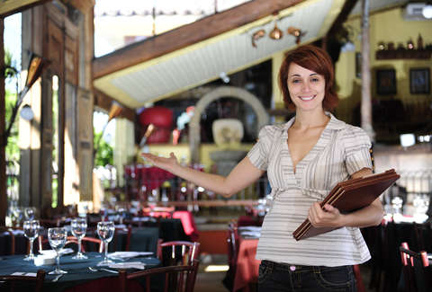
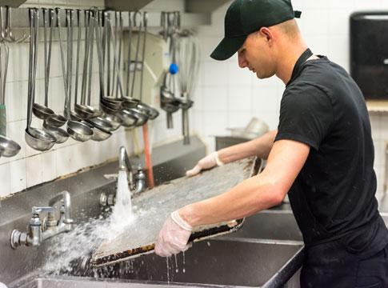

OPEN POSITIONS
JOB: EXECUTIVE CHEF
 Executive chef is the
head chef of the kitchen. He is the one who creates the specials menu for the day, orders the foods that will be
used for the preparation,
and works as the general manager of the kitchen for managing all the activity in the kitchen area.
He probably does the scheduling, the hiring, and the firing of kitchen staff, as well.
A good candidate for the executive chef position is normally filled by someone with several years of cooking and
restaurant management experience .
NUMBER OF VACANCIES: 1
Executive chef is the
head chef of the kitchen. He is the one who creates the specials menu for the day, orders the foods that will be
used for the preparation,
and works as the general manager of the kitchen for managing all the activity in the kitchen area.
He probably does the scheduling, the hiring, and the firing of kitchen staff, as well.
A good candidate for the executive chef position is normally filled by someone with several years of cooking and
restaurant management experience .
NUMBER OF VACANCIES: 1
JOB: SOUS CHEF
our sous chefs make sure that the kitchen is a well-oiled machine, preparing food along with other chefs in the kitchen, managing shifts and the kitchen staff to make sure food prepared quickly and properly and also try to enforce food safety standards by all means. When the head chef is away, the sous chef is in charge of the kitchen. NUMBER OF VACANCIES: 2
JOB: RESTAURANT MANAGER
This person has a number of responsibilities in the day to day for managing the various functionality and working of a restaurant. Qualifications required to be a restaurant manager include basics, such as people skills, organization and also hospitality. However candidates need a degree in business or hospitality to ensure that they are well aware of their responsibilities and duties. NUMBER OF VACANCIES: 1
JOB: WAITER/WAITRESS
A restaurant server is the customer service for your restaurant. A good restaurant server can convert any customer into a regular, while a poor server can just as easily turn customers away. A restaurant server job description can include many different duties beyond just serving food, they also take orders and inform kitchen about the dishes to be prepard. NUMBER OF VACANCIES:3
JOB: MAINTENANCE
 Maintenance
workers, also known as repair workers, fix and maintain mechanical equipment, buildings, and machines.
Tasks include plumbing work, painting, flooring repair and electrical repairs and heating and air conditioning
system maintenance. So we need various workers from these fields for Maintenance of our restaurant.
NUMBER OF VACANCIES:2
Maintenance
workers, also known as repair workers, fix and maintain mechanical equipment, buildings, and machines.
Tasks include plumbing work, painting, flooring repair and electrical repairs and heating and air conditioning
system maintenance. So we need various workers from these fields for Maintenance of our restaurant.
NUMBER OF VACANCIES:2
JOB: HOST/HOSTESS
 The general job of a restaurant host is to meet, greet, and seat customers with their respective bookings. Therefore it is an excellent entry-level job for someone without a lot of restaurant experience in this field. The host should be friendly and courteous, as well as organized and comfortable multi-tasking, knowing how to handle busy shifts. Also they should have a good hand at multitasking and they will act as first impression for restaurant. NUMBER OF VACANCIES:1
JOB: DISHWASHER
 Usually, an entry-level position in the restaurant. The main task is of washing dishes but will also include other duties like: washing floors, cleaning bathrooms, and other small maintenance tasks. NUMBER OF VACANCIES:3